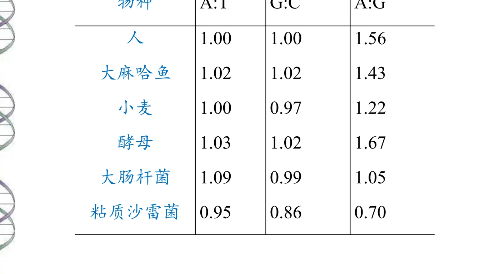
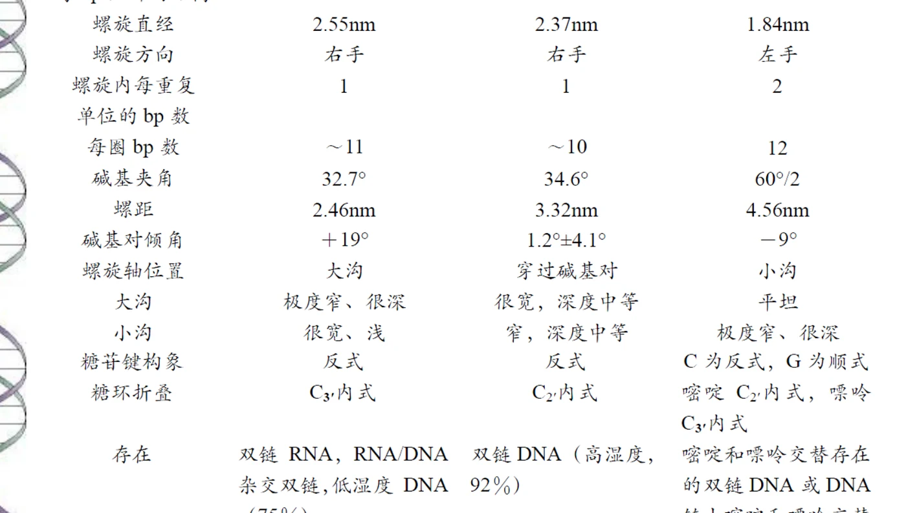
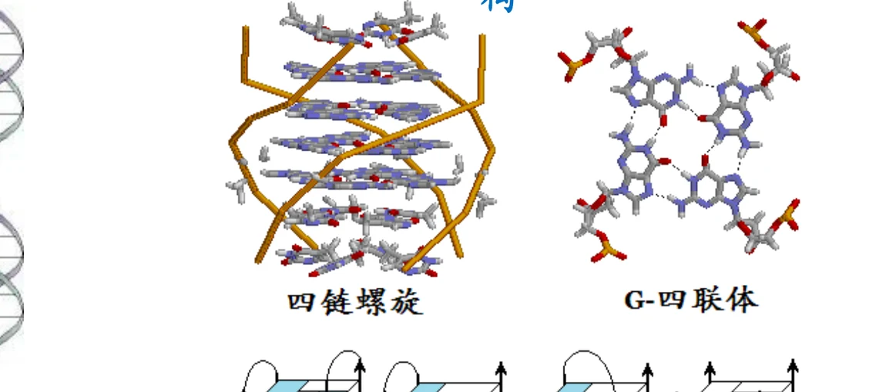
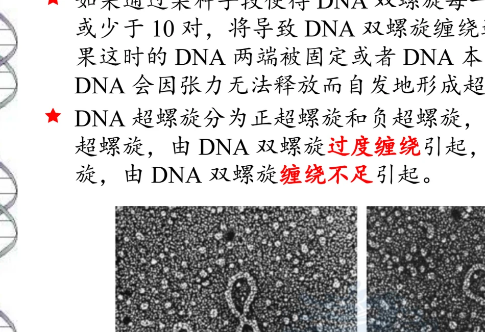
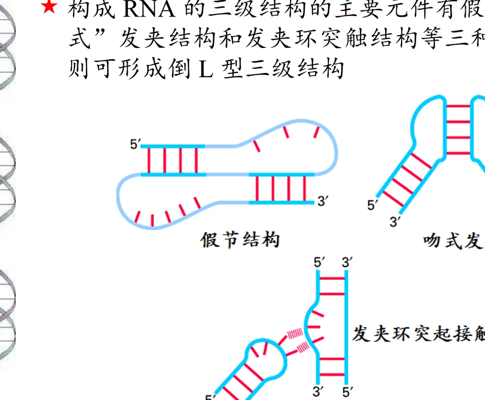
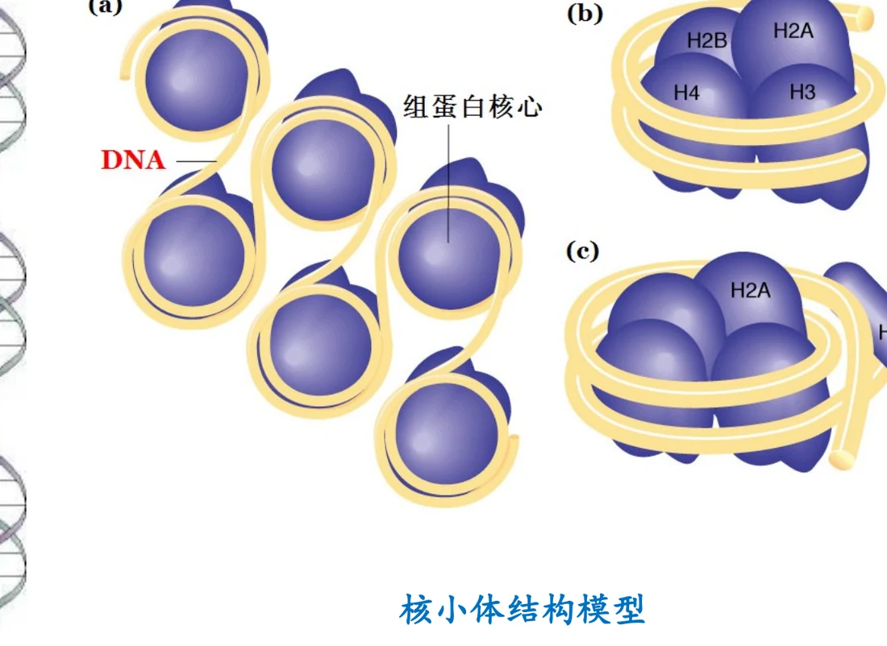

相邻核苷酸通过 3′,5′-磷酸二酯键相连。每个这样的键包含一个 3′-磷酸单酯键和一个 5′-磷酸单酯键，都是 P–O 共价键。
CHAPTER 07 · NUCLEIC ACID STRUCTURE & FUNCTION
核酸的结构与功能
本章从 DNA 与 RNA 的三点化学差异出发，依次展开一级、二级、三级结构，再把核酸放回到与蛋白质结合的复合物中，最后回答“信息储存在哪里、功能靠什么方式实现”。
DNA与RNA差异一级结构B型双螺旋A/B/Z比较超螺旋RNA折叠核小体
1. 分类，以及 DNA 与 RNA 的三点差异
核酸分为 DNA 和 RNA 两类。二者的总体分工可以概括为：DNA 一种类型、一种功能；RNA 多种类型、多种功能。RNA 按是否编码蛋白质分为编码 RNA（mRNA）和非编码 RNA（ncRNA，包括 rRNA、tRNA、snRNA、snoRNA、miRNA、siRNA、piRNA、lncRNA、circRNA 等）。
判断一个核酸是 DNA 还是 RNA，唯一的化学标准是戊糖种类——核糖还是 2-脱氧核糖。碱基种类只能作为辅助判据。三点差异及其后果如下。
| 差异 | DNA | RNA | 后果 |
|---|---|---|---|
| 戊糖 | 2-脱氧-D-核糖（2′ 位为 –H） | D-核糖（2′ 位为 –OH） | 这是唯一的判定标准。2′-OH 是亲核基团，会进攻骨架磷原子形成 2′,3′-环状磷酸二酯中间体，所以 RNA 在碱性条件下易水解；DNA 没有 2′-OH，因此明显更稳定——遗传物质需要长期稳定 |
| 第四种碱基 | 用 T | 用 U | C 会自发脱氨基变成 U。如果 DNA 也用 U，就无法区分“正常的 U”和“由 C 变来的 U”。DNA 用带甲基的 T（即 U 加一个甲基）给正常位置打上标记，修复系统才能发现并替换没有标记的 U |
| 链的数目 | 通常双链 | 通常单链 | 双链适合复制、转录和修复时的模板功能；单链可以自身折叠形成与蛋白质复杂度相当的二级、三级结构，适合承担催化、识别、调控等多样功能 |
Box 7-1：三个反例
① 枯草杆菌噬菌体 PBS2 把 DNA 中的 T 全部替换成 U，以此逃避宿主的限制酶识别——说明“DNA 用 T”并非绝对铁律。② 果蝇幼虫化蛹时会在 RNA 中插入 U 作为细胞死亡的信号。③ 抗体的体细胞高频突变正是通过 C→U 脱氨基实现的，脱氨后的 U 被修复系统当作错误处理，从而引入突变。这三个例子共同说明：同一个化学差异，可以被不同生物赋予完全不同的用途。
核酸的结构层次有一级、二级、三级，但没有四级结构。这一点与蛋白质不同，需要特别记住。
2. 一级结构：3′,5′-磷酸二酯键与极性
一级结构指核酸中核苷酸（碱基）的排列顺序，书写方向为 5′→3′。多聚核苷酸链有四个共同特征：
5′ 端有游离（未成酯）的 5′-OH，3′ 端有未成酯的 3′-OH。这种方向性称为极性（polarity）。
骨架上的磷酸基团解离，使核酸成为多聚阴离子。这是电泳、离子交换和与碱性蛋白结合的基础。
顺序即信息。一级结构是遗传信息的载体，二级结构则辅助复制、转录、重组和修复。
少数核酸是环状的，包括细菌染色体、质粒、叶绿体和线粒体 DNA，以及类病毒（viroid，环状 RNA）。环状分子没有游离的 3′ 端和 5′ 端——这一点在第 5 节讲超螺旋时会变得非常关键。
书写规则：5′→3′；有机化学上“p”写在核苷酸的 5′ 端表示磷酸；碱基前加 d 表示脱氧（如 dAMP），加 r 表示核糖（如 rAMP）。
3. 二级结构：从 B 型双螺旋说起
DNA 的二级结构主要是各种形式的双螺旋。1953 年 4 月 25 日 Watson 和 Crick 提出的 B 型双螺旋是主要形式，也是全部讨论的基准。
| 特征 | 具体内容 | 为什么重要 |
|---|---|---|
| 骨架 | 两条反平行的多聚核苷酸链相互缠绕成右手双螺旋 | 反平行是形成稳定碱基配对的前提 |
| 碱基配对 | 两条链互补：A 总是配 T，G 总是配 C。A=T 有 2 个氢键，G≡C 有 3 个氢键 | 链间氢键决定了配对的特异性；GC 含量高的 DNA 需要更高温度才能解链 |
| 碱基位置 | 碱基对位于螺旋内部，垂直于暴露在外的脱氧核糖磷酸骨架；碱基对之间靠疏水键和范德华力堆叠 | 堆叠是稳定双螺旋的主要贡献者 |
| 沟槽 | 表面有明显的大沟（宽 2.2 nm）和小沟（宽 1.2 nm） | 蛋白质识别 DNA 序列时主要与沟槽中的碱基边缘发生作用 |
| 几何参数 | 相邻碱基对距离 0.34 nm，相互旋转约 36°；螺旋直径 2 nm；每圈完整螺旋含 10 个碱基对，高 3.4 nm | 0.34 × 10 = 3.4，这三个数字互相自洽 |

图源：第7章《核酸的结构与功能》PPT，第8页。同一物种内 A:T 和 G:C 都接近 1，但 A:G 随物种变化很大——这就是 Chargaff 规则的两个方面。
Chargaff 规则常被简化为“A=T，G=C”，但课件的数据表显示了更完整的图景：同一物种内 A:T 和 G:C 确实都接近 1（人 1.00/1.00，大麻哈鱼 1.02/1.02），但 A:G 比值随物种大幅变化（大肠杆菌 1.05，酵母 1.67，粘质沙雷菌 0.70）。前一条反映了碱基配对的结构约束，后一条反映了不同物种基因组的碱基组成偏好——两者在逻辑上是不同层次的规律。
3.1 稳定双螺旋的力：氢键管特异性，堆叠管稳定
这里的因果分工必须说清。氢键在链间形成，决定了哪两个碱基配在一起，也就是配对的特异性。但氢键数量并不足以解释双螺旋的稳定性——碱基堆积才是主要贡献者。
碱基堆积指相邻碱基对之间的垂直相互作用，本质是疏水作用加范德华力。它的强度与环的重叠面积成正比，因此顺序是：嘌呤-嘌呤 > 嘌呤-嘧啶 > 嘧啶-嘧啶。碱基甲基化会增大堆积作用（这正是 T 比 U 堆积更强的原因之一）。除了这两项，阳离子或带正电的化合物中和磷酸骨架的负电荷也是必需的，否则链间的静电排斥会使双螺旋解体。
证据链
支持 B 型双螺旋的证据有三类：X 射线衍射数据提供了几何参数；Chargaff 规则提供了碱基比例的约束；碱基的互变异构（第 6 章讲的酮式/氨基式占绝对优势）保证了配对的确定性。三条证据分别来自物理学、生物化学和有机化学，互相独立又彼此吻合——这是这门学科最漂亮的一次交叉验证。
4. A 型、B 型、Z 型以及其他非标准结构
DNA 的双螺旋不止一种形式。A、B、Z 三型的参数差别很有系统性，值得整表记住。

图源：第7章《核酸的结构与功能》PPT，第9页。课件给出的完整参数对照。
| 参数 | A 型 | B 型 | Z 型 |
|---|---|---|---|
| 外形 | 短而宽 | 长而瘦 | 长而细 |
| 每 bp 上升距离 | 0.23 nm | 0.332 ± 0.19 nm | 0.38 nm |
| 螺旋直径 | 2.55 nm | 2.37 nm | 1.84 nm |
| 螺旋方向 | 右手 | 右手 | 左手 |
| 每圈 bp 数 | ~11 | ~10 | 12 |
| 螺距 | 2.46 nm | 3.32 nm | 4.56 nm |
| 碱基对倾角 | +19° | 1.2° ± 4.1° | −9° |
| 螺旋轴位置 | 大沟 | 穿过碱基对 | 小沟 |
| 大沟 | 极度窄、很深 | 很宽，深度中等 | 平坦 |
| 小沟 | 很宽、浅 | 窄，深度中等 | 极度窄、很深 |
| 糖苷键构象 | 反式 | 反式 | C 为反式，G 为顺式 |
| 糖环折叠 | C3′-内式 | C2′-内式 | 嘧啶 C2′-内式，嘌呤 C3′-内式 |
| 存在 | 双链 RNA、RNA/DNA 杂交双链、低湿度 DNA（75%） | 双链 DNA（高湿度，92%） | 嘧啶和嘌呤交替存在的双链 DNA 区域 |
Z-DNA 由 Alex Rich 发现，存在于富含 G:C 的区域。它的奇异之处在于构象的翻转方式：G 采取顺式构象；C 的碱基仍保持反式，但整个胞苷酸（碱基加脱氧核糖）翻转 180°。结果是 G:C 氢键在 Z-DNA 中得以保持。这个细节很重要——它说明 Z-DNA 不是碱基配对被破坏，而是同一套碱基对换了一种骨架走向来组织。这也解释了为什么 Z 型只在嘌呤和嘧啶交替排列的区域才能形成：只有交替的序列才能让相邻碱基对以这种交替方式翻转。
4.1 非标准二级结构
在蛋白质（如组蛋白）的诱导下，或序列本身具有特殊重复模式时，DNA 会形成非标准结构。相关序列模式包括反向重复、回文、镜像重复、正向重复、嘌呤丰富区、嘧啶丰富区、A 丰富区和 G 丰富区。对应的结构有：弯曲、十字形、三链螺旋 / H-DNA（使用 Hoogsteen 碱基对）、碱基翻转、四链螺旋 / G-四联体、滑动错配 DNA（SMP-DNA）。

图源：第7章《核酸的结构与功能》PPT，第14页。左边是四条链形成的四链螺旋，右边是四个鸟嘌呤通过氢键构成的一个 G-四联体平面。
为什么这些结构不是“异常”
它们都有生理功能。G-四联体出现在端粒和某些基因的启动子区，参与调控；十字形结构与复制起点和重组有关；H-DNA 与基因表达调控有关。把它们称为“非标准”只是相对于最普遍的 B 型而言，并不是说它们是错误或病态的结构。
5. 三级结构：超螺旋
DNA 的三级结构是超螺旋。理解它的关键在一个连锁的因果链：
每圈碱基数偏离 10→螺旋过旋或欠旋→张力无法释放→自发形成超螺旋
当每圈螺旋的碱基对数多于或少于 10 时，双螺旋就处于过旋或欠旋状态。这种张力本来可以通过链的旋转释放掉，但如果链的两端被固定，或者 DNA 是共价闭合的环状分子（回想第 2 节：环状分子没有游离末端），张力就无处可去，于是超螺旋自发形成。
| 类型 | 手性 | 成因 |
|---|---|---|
| 正超螺旋 | 左手 | 过旋（overwinding） |
| 负超螺旋 | 右手 | 欠旋（underwinding） |

图源：第7章《核酸的结构与功能》PPT，第15页。左为超螺旋 DNA，右为松弛 DNA，可直接看出两者的紧凑程度差异。
注意手性与成因的对应不要记反
“正超螺旋是左手、由过旋造成”这条对应关系容易写反。一个记忆抓手：正（positive）对应过旋（overwinding），因为两者都是“多加”的意思；而超螺旋的手性与成因方向相反，所以正超螺旋表现为左手。生物学中绝大多数天然 DNA 是负超螺旋，因为它有利于解链——解链是复制和转录的第一步。
6. RNA 的二级与三级结构
RNA 的结构逻辑与 DNA 很不一样。极少数病毒 RNA 是双链的，形成 A 型双螺旋；但绝大多数 RNA 是单链，通过分子内互补配对折叠：互补的碱基形成局部 A 型双螺旋，不互补的碱基则突出形成环。
这里有两个必须记住的细节。第一，RNA 螺旋采取A 型而不是 B 型（这与 RNA 的 C3′-内式糖环折叠一致，可回到第 4 节的表格对照）。第二，RNA 螺旋中 GU 碱基对很常见——这打破了“只有 AU 和 GC”的直觉，也是 RNA 二级结构预测中必须允许 GU 配对的原因。
6.1 RNA 三级结构的三类元件
RNA 的三级结构建立在二级结构之上，复杂度可与蛋白质相当。螺旋区作为刚性支架，而由凸起、内环、发夹环和末端环构成的单链区则像蛋白质的侧链一样，是功能的关键部位。三个主要元件是：

图源：第7章《核酸的结构与功能》PPT，第17页。假节结构（长程配对形成两个堆叠螺旋）、吻式发夹（两个发夹环之间配对）、发夹环突起接触。tRNA 则形成倒 L 型。
- 假节结构（pseudoknot）——环区的碱基与环外的碱基配对，形成两个堆叠的螺旋；
- 吻式发夹（kissing hairpin）——两个独立的发夹环之间互相配对；
- 发夹环突起接触——一个发夹环与另一个分子的凸起区相互作用。
大型 RNA 需要 RNA 伴侣（RNA chaperone）协助才能正确折叠。这与蛋白质需要分子伴侣的逻辑完全一致：折叠路径上存在容易陷入的动力学陷阱，需要外部帮助才能走到天然构象。
6.2 tRNA、rRNA、mRNA
| RNA | 结构要点 | 功能要点 |
|---|---|---|
| tRNA | 单链，73~94 个核苷酸，含较多修饰核苷酸，3′ 端最后三个核苷酸总是 CCA。二级结构呈三叶草形，含四个环和四个茎（环＝未配对碱基突出而成；茎＝链内互补配对形成的局部 A 型双螺旋；臂＝紧靠茎又不属于环的非配对核苷酸）。三级结构为倒 L 型，由 D 环、不变碱基与 TψC 环碱基之间的氢键把 D 臂和 TψC 臂折叠到一起形成；参与三级结构的许多氢键并非通常的 AU、GC 配对 | 氨基酸的运载工具 |
| rRNA | 约占核糖体的 2/3，有大量分子内配对，是核糖体蛋白的支架。核糖体的整体构象由 rRNA 决定，核糖体蛋白嵌在 RNA 螺旋之间。不同物种的 rRNA 一级结构差异很小，但二级结构高度相似 | 大肠杆菌 23S rRNA 就是肽基转移酶——催化肽键形成的活性中心由 RNA 而非蛋白质构成 |
| mRNA | DNA 的转录产物、翻译的模板。原核多为多顺反子，真核多为单顺反子且带 5′ 帽子和 3′ poly(A) 尾。最常见的二级结构元件是茎环；两端二级结构影响翻译效率，部分 mRNA 用末端结构调控表达 | 传递遗传信息并指导蛋白质合成 |
rRNA 的催化能力为什么重要
“大肠杆菌 23S rRNA 是肽基转移酶”这句话的分量在于它支持了“RNA 世界”假说：催化肽键形成这样一个核心的生物学反应，催化中心居然是 RNA 而不是蛋白质。这说明 RNA 既有信息储存能力（像 DNA），又有催化能力（像蛋白质），完全可以胜任生命起源早期的全部关键角色。
7. 核酸与蛋白质的复合物
核酸在细胞中很少以裸链形式存在，几乎总与蛋白质结合。这类复合物是结构生物学的重要对象。
| 类别 | 代表 | 组成要点 |
|---|---|---|
| DNA-蛋白质 | 真核与古菌的核小体；细菌的 DNA-蛋白质复合物 | 约 147 bp 的 DNA 缠绕在组蛋白八聚体上；八聚体由 H2A、H2B、H3、H4 各两个组成 |
| RNA-蛋白质 | 核糖体、剪接体、信号识别颗粒（SRP）、端粒酶 | RNA 提供骨架和催化中心，蛋白质辅助折叠与识别 |

图源：第7章《核酸的结构与功能》PPT，第21页。(a) 多个核小体串成念珠状；(b)(c) 单个核小体的组蛋白核心组成与 DNA 走向。
8. 功能：信息存在哪里，功能靠什么实现
本章最后回到功能层面。课件的表述很精炼，但每一句都有结构基础。
| 分子 | 功能 | 结构基础 |
|---|---|---|
| DNA | 主要的遗传物质（少数病毒例外，用 RNA）；保存和传递遗传信息 | 一级结构承载信息；二级结构辅助复制、转录、重组和修复。碱基序列本身是信息，而双螺旋结构提供了复制和修复所需的模板与互补性 |
| RNA | 多重身份：① 某些病毒的遗传物质；② 基因表达的中心环节（mRNA、tRNA、rRNA）；③ 部分 RNA 具有催化活性（核酶 ribozyme） | 单链可自身折叠，形成多样化的二级和三级结构，从而具备识别、催化和调控能力 |
“DNA 一种类型一种功能、RNA 多种类型多种功能”这个总结在此得到结构层面的解释：双链把 DNA 锁死在模板这个角色上，而单链让 RNA 可以折叠出各种形状去执行不同任务。
主动回忆
不看笔记回答：① 判定 DNA 与 RNA 的唯一化学标准是什么；② 氢键和碱基堆积分别负责什么；③ A、B、Z 三型中哪一个是左手螺旋、它的糖苷键构象有什么特别；④ 正负超螺旋分别对应过旋还是欠旋、分别是什么手性；⑤ RNA 二级结构中有哪种非标准配对；⑥ 核小体由多少 bp DNA 和哪些组蛋白组成。